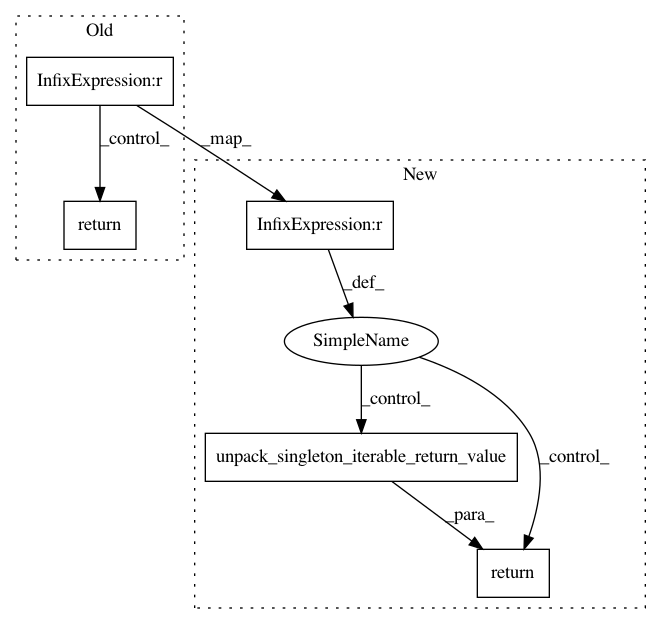

4a28bbf9659d96e15f0f241bcab76381e299097c,pymanopt/autodiff/backends/_tensorflow.py,_TensorFlowBackend,compute_gradient,#_TensorFlowBackend#Any#Any#,69
Before Change
flattened_arguments = flatten_arguments(arguments)
gradient = self._gradients(function, flattened_arguments)
if len(flattened_arguments) == 1:
(argument,) = flattened_arguments
def unary_gradient(point):
feed_dict = {argument: point}
return self._session.run(gradient[0], feed_dict)
return unary_gradient
def nary_gradient(points):
feed_dict = {
argument: point
After Change
for variable, argument in zip(variables, args)
}
return self._session.run(gradients, feed_dict)
if len(variables) == 1:
return unpack_singleton_iterable_return_value(gradient)
return gradient
@staticmethod
def _hessian_vector_product(function, arguments, vectors):
In pattern: SUPERPATTERN
Frequency: 3
Non-data size: 5
Instances
Project Name: pymanopt/pymanopt
Commit Name: 4a28bbf9659d96e15f0f241bcab76381e299097c
Time: 2020-02-01
Author: niklas.koep@gmail.com
File Name: pymanopt/autodiff/backends/_tensorflow.py
Class Name: _TensorFlowBackend
Method Name: compute_gradient
Project Name: pymanopt/pymanopt
Commit Name: 4a28bbf9659d96e15f0f241bcab76381e299097c
Time: 2020-02-01
Author: niklas.koep@gmail.com
File Name: pymanopt/autodiff/backends/_autograd.py
Class Name: _AutogradBackend
Method Name: compute_gradient
Project Name: pymanopt/pymanopt
Commit Name: 818492efd4238bd8fedcff105bd46044a714f762
Time: 2020-02-01
Author: niklas.koep@gmail.com
File Name: pymanopt/autodiff/backends/_pytorch.py
Class Name: _PyTorchBackend
Method Name: compute_gradient